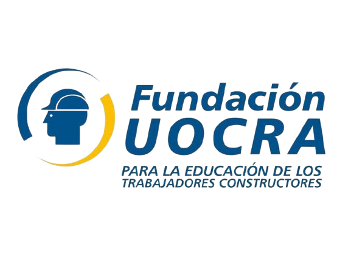

Email
areadeformacionprofesional@unpaz.edu.ar
Sede Pueyrredón
Oficina 14 Sede Pueyrredón
La unpaz tiene como objetivo propiciar una mirada estratégica de la Educación Técnico Profesional para el trabajo en el contexto local y regional.

Propuesta Formativa para el año 2025
Economía del Cuidado
- Cuidadora/or de Niños, Niñas y Adolescentes.
- Cuidadora/or no terapéutico de Personas Mayores.
- Cuidadora/or de Jardín y Huerta particular.
- Huerta Agroecológica.
Economía del Conocimiento.
- Modelado 3D
- Reparación Básica de Celulares.
- Programación en Java
- Pensamiento Computacional
Formación en Oficios
- Montador Electricista
- Instalador de Sistemas Domóticos
- Electricidad de Inmuebles
- Curso de Asistente en Gestiones Impositivas
- Diplomatura en Instalación y Mantenimiento de Equipos Biomédicos
